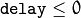

User Interface¶
createTrackbar¶
Creates a trackbar and attaches it to the specified window.
-
C++:
createTrackbar(const string& trackbarname, const string& winname, int* value, int count, TrackbarCallback onChange=0, void* userdata=0)¶
-
C:
cvCreateTrackbar(const char* trackbar_name, const char* window_name, int* value, int count, CvTrackbarCallback on_change=NULL )¶
-
Python:
cv.CreateTrackbar(trackbarName, windowName, value, count, onChange) → None¶ Parameters: - trackbarname – Name of the created trackbar.
- winname – Name of the window that will be used as a parent of the created trackbar.
- value – Optional pointer to an integer variable whose value reflects the position of the slider. Upon creation, the slider position is defined by this variable.
- count – Maximal position of the slider. The minimal position is always 0.
- onChange – Pointer to the function to be called every time the slider changes position. This function should be prototyped as
void Foo(int,void*);, where the first parameter is the trackbar position and the second parameter is the user data (see the next parameter). If the callback is the NULL pointer, no callbacks are called, but onlyvalueis updated. - userdata – User data that is passed as is to the callback. It can be used to handle trackbar events without using global variables.
The function createTrackbar creates a trackbar (a slider or range control) with the specified name and range, assigns a variable value to be a position synchronized with the trackbar and specifies the callback function onChange to be called on the trackbar position change. The created trackbar is displayed in the specified window winname.
Note
[Qt Backend Only] winname can be empty (or NULL) if the trackbar should be attached to the control panel.
Clicking the label of each trackbar enables editing the trackbar values manually.
Note
- An example of using the trackbar functionality can be found at opencv_source_code/samples/cpp/connected_components.cpp
getTrackbarPos¶
Returns the trackbar position.
-
C++:
getTrackbarPos(const string& trackbarname, const string& winname)¶
-
Python:
cv2.getTrackbarPos(trackbarname, winname) → retval¶
-
C:
cvGetTrackbarPos(const char* trackbar_name, const char* window_name)¶
-
Python:
cv.GetTrackbarPos(trackbarName, windowName) → retval¶ Parameters: - trackbarname – Name of the trackbar.
- winname – Name of the window that is the parent of the trackbar.
The function returns the current position of the specified trackbar.
Note
[Qt Backend Only] winname can be empty (or NULL) if the trackbar is attached to the control panel.
imshow¶
Displays an image in the specified window.
-
C++:
imshow(const string& winname, InputArray mat)¶
-
Python:
cv2.imshow(winname, mat) → None¶
-
C:
cvShowImage(const char* name, const CvArr* image)¶
-
Python:
cv.ShowImage(name, image) → None¶ Parameters: - winname – Name of the window.
- image – Image to be shown.
The function imshow displays an image in the specified window. If the window was created with the CV_WINDOW_AUTOSIZE flag, the image is shown with its original size, however it is still limited by the screen resolution. Otherwise, the image is scaled to fit the window. The function may scale the image, depending on its depth:
- If the image is 8-bit unsigned, it is displayed as is.
- If the image is 16-bit unsigned or 32-bit integer, the pixels are divided by 256. That is, the value range [0,255*256] is mapped to [0,255].
- If the image is 32-bit floating-point, the pixel values are multiplied by 255. That is, the value range [0,1] is mapped to [0,255].
If the window was not created before this function, it is assumed creating a window with CV_WINDOW_AUTOSIZE.
If you need to show an image that is bigger than the screen resolution, you will need to call namedWindow("", WINDOW_NORMAL) before the imshow.
If window was created with OpenGL support, imshow also support ogl::Buffer , ogl::Texture2D and gpu::GpuMat as input.
Note
This function should be followed by waitKey function which displays the image for specified milliseconds. Otherwise, it won’t display the image. For example, waitKey(0) will display the window infinitely until any keypress (it is suitable for image display). waitKey(25) will display a frame for 25 ms, after which display will be automatically closed. (If you put it in a loop to read videos, it will display the video frame-by-frame)
[Windows Backend Only] Pressing Ctrl+C will copy the image to the clipboard.
namedWindow¶
Creates a window.
-
C++:
namedWindow(const string& winname, int flags=WINDOW_AUTOSIZE )¶
-
Python:
cv2.namedWindow(winname[, flags]) → None¶
-
C:
cvNamedWindow(const char* name, int flags=CV_WINDOW_AUTOSIZE )¶
-
Python:
cv.NamedWindow(name, flags=CV_WINDOW_AUTOSIZE) → None¶ Parameters: - name – Name of the window in the window caption that may be used as a window identifier.
- flags –
Flags of the window. The supported flags are:
- WINDOW_NORMAL If this is set, the user can resize the window (no constraint).
- WINDOW_AUTOSIZE If this is set, the window size is automatically adjusted to fit the displayed image (see
imshow()), and you cannot change the window size manually. - WINDOW_OPENGL If this is set, the window will be created with OpenGL support.
The function namedWindow creates a window that can be used as a placeholder for images and trackbars. Created windows are referred to by their names.
If a window with the same name already exists, the function does nothing.
You can call destroyWindow() or destroyAllWindows() to close the window and de-allocate any associated memory usage. For a simple program, you do not really have to call these functions because all the resources and windows of the application are closed automatically by the operating system upon exit.
Note
Qt backend supports additional flags:
- CV_WINDOW_NORMAL or CV_WINDOW_AUTOSIZE:
CV_WINDOW_NORMALenables you to resize the window, whereasCV_WINDOW_AUTOSIZEadjusts automatically the window size to fit the displayed image (seeimshow()), and you cannot change the window size manually.- CV_WINDOW_FREERATIO or CV_WINDOW_KEEPRATIO:
CV_WINDOW_FREERATIOadjusts the image with no respect to its ratio, whereasCV_WINDOW_KEEPRATIOkeeps the image ratio.- CV_GUI_NORMAL or CV_GUI_EXPANDED:
CV_GUI_NORMALis the old way to draw the window without statusbar and toolbar, whereasCV_GUI_EXPANDEDis a new enhanced GUI.
By default, flags == CV_WINDOW_AUTOSIZE | CV_WINDOW_KEEPRATIO | CV_GUI_EXPANDED
destroyWindow¶
Destroys a window.
-
C++:
destroyWindow(const string& winname)¶
-
Python:
cv2.destroyWindow(winname) → None¶
-
C:
cvDestroyWindow(const char* name)¶
-
Python:
cv.DestroyWindow(name) → None¶ Parameters: winname – Name of the window to be destroyed.
The function destroyWindow destroys the window with the given name.
destroyAllWindows¶
Destroys all of the HighGUI windows.
-
C++:
destroyAllWindows()¶
-
Python:
cv2.destroyAllWindows() → None¶
-
C:
cvDestroyAllWindows()¶
-
Python:
cv.DestroyAllWindows() → None¶
The function destroyAllWindows destroys all of the opened HighGUI windows.
MoveWindow¶
Moves window to the specified position
-
C++:
moveWindow(const string& winname, int x, int y)¶
-
Python:
cv2.moveWindow(winname, x, y) → None¶
-
C:
cvMoveWindow(const char* name, int x, int y)¶
-
Python:
cv.MoveWindow(name, x, y) → None¶ Parameters: - winname – Window name
- x – The new x-coordinate of the window
- y – The new y-coordinate of the window
ResizeWindow¶
Resizes window to the specified size
-
C++:
resizeWindow(const string& winname, int width, int height)¶
-
Python:
cv2.resizeWindow(winname, width, height) → None¶
-
C:
cvResizeWindow(const char* name, int width, int height)¶
-
Python:
cv.ResizeWindow(name, width, height) → None¶ Parameters: - winname – Window name
- width – The new window width
- height – The new window height
Note
- The specified window size is for the image area. Toolbars are not counted.
- Only windows created without CV_WINDOW_AUTOSIZE flag can be resized.
SetMouseCallback¶
Sets mouse handler for the specified window
-
C++:
setMouseCallback(const string& winname, MouseCallback onMouse, void* userdata=0 )¶
-
C:
cvSetMouseCallback(const char* window_name, CvMouseCallback on_mouse, void* param=NULL )¶
-
Python:
cv.SetMouseCallback(windowName, onMouse, param=None) → None¶ Parameters: - winname – Window name
- onMouse – Mouse callback. See OpenCV samples, such as https://github.com/opencv/opencv/tree/master/samples/cpp/ffilldemo.cpp, on how to specify and use the callback.
- userdata – The optional parameter passed to the callback.
setTrackbarPos¶
Sets the trackbar position.
-
C++:
setTrackbarPos(const string& trackbarname, const string& winname, int pos)¶
-
Python:
cv2.setTrackbarPos(trackbarname, winname, pos) → None¶
-
C:
cvSetTrackbarPos(const char* trackbar_name, const char* window_name, int pos)¶
-
Python:
cv.SetTrackbarPos(trackbarName, windowName, pos) → None¶ Parameters: - trackbarname – Name of the trackbar.
- winname – Name of the window that is the parent of trackbar.
- pos – New position.
The function sets the position of the specified trackbar in the specified window.
Note
[Qt Backend Only] winname can be empty (or NULL) if the trackbar is attached to the control panel.
waitKey¶
Waits for a pressed key.
-
C++:
waitKey(int delay=0)¶
-
Python:
cv2.waitKey([delay]) → retval¶
-
C:
cvWaitKey(int delay=0 )¶
-
Python:
cv.WaitKey(delay=0) → int¶ Parameters: delay – Delay in milliseconds. 0 is the special value that means “forever”.
The function waitKey waits for a key event infinitely (when
 ) or for delay milliseconds, when it is positive. Since the OS has a minimum time between switching threads, the function will not wait exactly delay ms, it will wait at least delay ms, depending on what else is running on your computer at that time. It returns the code of the pressed key or -1 if no key was pressed before the specified time had elapsed.
Note
This function is the only method in HighGUI that can fetch and handle events, so it needs to be called periodically for normal event processing unless HighGUI is used within an environment that takes care of event processing.
Note
The function only works if there is at least one HighGUI window created and the window is active. If there are several HighGUI windows, any of them can be active.
setOpenGlDrawCallback¶
Set OpenGL render handler for the specified window.
-
C++:
setOpenGlDrawCallback(const string& winname, OpenGlDrawCallback onOpenGlDraw, void* userdata=0)¶ Parameters: - winname – Window name
- onOpenGlDraw – Draw callback.
- userdata – The optional parameter passed to the callback.
setOpenGlContext¶
Sets the specified window as current OpenGL context.
-
C++:
setOpenGlContext(const string& winname)¶ Parameters: - winname – Window name
updateWindow¶
Force window to redraw its context and call draw callback ( setOpenGlDrawCallback() ).
-
C++:
updateWindow(const string& winname)¶ Parameters: - winname – Window name
Help and Feedback
You did not find what you were looking for?- Ask a question on the Q&A forum.
- If you think something is missing or wrong in the documentation, please file a bug report.

Table Of Contents
Previous topic
highgui. High-level GUI and Media I/O
Next topic
Reading and Writing Images and Video